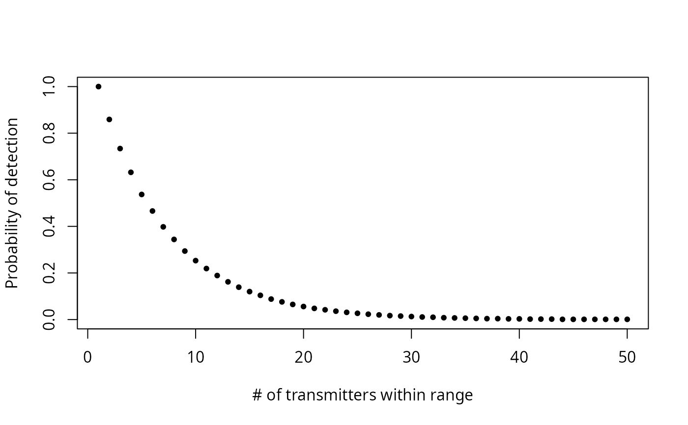
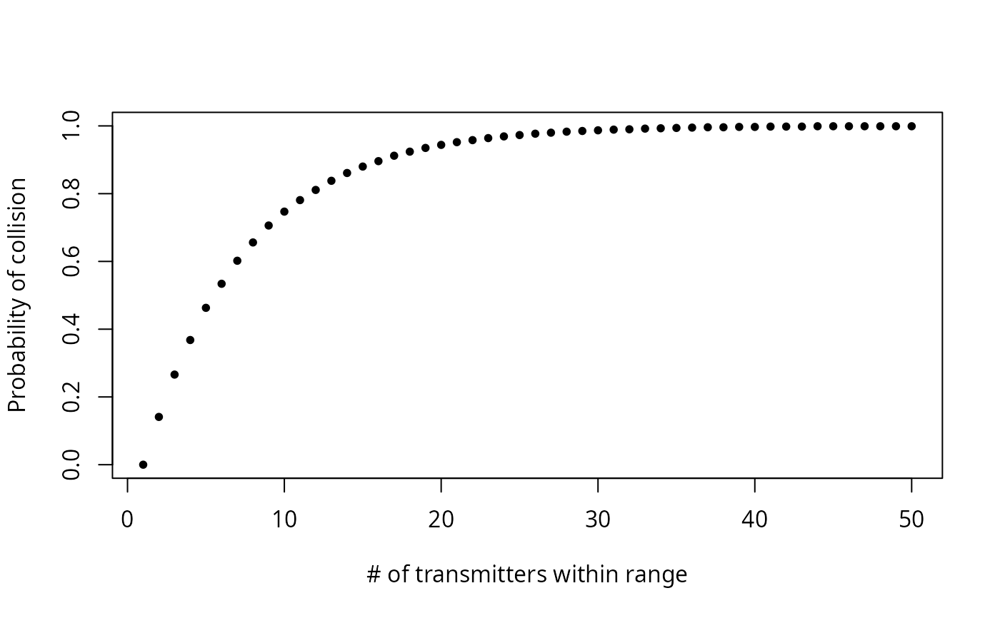

R/sim-calc_collision_prob.r
calc_collision_prob.RdEstimate (by simulation) probability of collision for co-located telemetry transmitters with pulse-period-modulation type encoding
calc_collision_prob(
delayRng = c(60, 180),
burstDur = 5,
maxTags = 50,
nTrans = 10000
)A 2-element numeric vector with minimum and maximum delay (time in seconds from end of one coded burst to beginning of next).
A numeric scalar with duration (in seconds) of each coded burst (i.e., pulse train).
A numeric scalar with maximum number of co-located transmitters (within detection range at same time).
A numeric scalar with the number of transmissions to simulate for each co-located transmitter.
A data frame containing summary statistics:
Number of tags within detection range at one time
Minimum detection probability among simulated tags
First quartile of detection probabilities among simulated tags
Median detection probability among simulated tags
Third quartile of detection probabilities among simulated tags
Maximum detection probability among simulated tags
Mean detection probability among simulated tags
Expected number of detections per hour assuming perfect detection probability, given the number of tags within detection range
Observed number of detections per hour for a given number of tags
Eeffective delay of the transmitter after incorporating collisions
Mean number of detections per hour per tag
Calculates the detection probability associated with collision, given delay range (delayRng), burst duration (burstDur), maximum number of co-located tags (maxTags), and number of simulated transmission per tag (nTrans). The simulation estimates detection probability due only to collisions (i.e., when no other variables influence detection probability) and assuming that all tags are co-located at a receiver for the duration of the simulation.
For application example, see:
Binder, T.R., Holbrook, C.M., Hayden, T.A. and Krueger, C.C., 2016. Spatial and
temporal variation in positioning probability of acoustic telemetry arrays:
fine-scale variability and complex interactions. Animal Biotelemetry, 4(1):1.
http://animalbiotelemetry.biomedcentral.com/articles/10.1186/s40317-016-0097-4
# parameters analagous to Vemco tag, global coding, 45 s nominal delay
foo <- calc_collision_prob(
delayRng = c(45, 90), burstDur = 5.12, maxTags = 50,
nTrans = 10000
)
# plot probabilities of detection
plot(med ~ nTags,
data = foo, type = "p", pch = 20, ylim = c(0, 1),
xlab = "# of transmitters within range", ylab = "Probability of detection"
)

# plot probability of collision by subtracting detection probability from 1
plot((1 - med) ~ nTags,
data = foo, type = "p", pch = 20, ylim = c(0, 1),
xlab = "# of transmitters within range", ylab = "Probability of collision"
)
